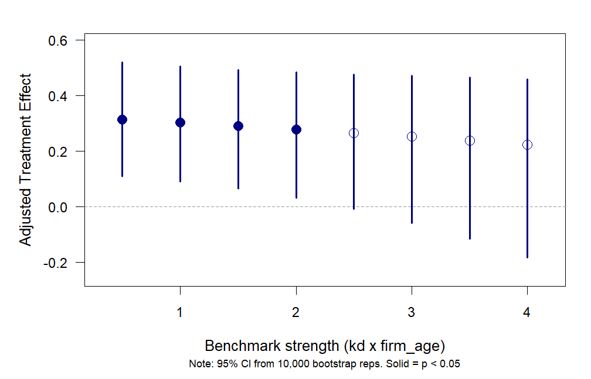

Sensitivity analysis for omitted variables, with bootstrap inference for regressions that call for robust or clustered standard errors. An R package and a Stata command.
Get started in R Get started in Stata Worked example
What it does
How strong would an omitted variable have to be to change a regression result? sensemakr (Cinelli & Hazlett, 2020) gives a concrete answer: the coefficient you would have obtained had a variable as strong as one of your observed covariates, the benchmark, been left out of the model.
bootmakr wraps that calculation in a bootstrap. In every replication it resamples the data (whole clusters when observations are clustered), refits the regression and recomputes the bias-adjusted coefficient. You get a standard error, a percentile confidence interval and a p-value for the adjusted coefficient that do not rest on the conventional OLS variance formula.
Why it exists
The impact threshold of a confounding variable (ITCV) is commonly read as the smallest product of correlations an omitted variable must have with the predictor and with the outcome to overturn a statistically significant result. Lonati and Wulff (2026) show that this reading generally breaks down when the regression is estimated with heteroskedasticity- or cluster-robust standard errors, and propose bootstrap-based sensemakr as an alternative. bootmakr is the software that accompanies the paper. The R package and the Stata command implement the same procedure and are documented side by side on this site.
Install
# install.packages("remotes")
remotes::install_github("jespernwulff/bootmakr")One call
Name the regression, the treatment, the benchmark and, if the data are clustered, the cluster variable. The example is the one in the paper. Chen, Chittoor, and Vissa (2021) find that family CEOs are paid more than professional CEOs: a coefficient of 0.33 on log pay, with standard errors clustered by firm. What would that coefficient be had a variable as strong as CEO tenure been omitted? The code runs as it stands; the data come from the authors’ OSF repository.
library(bootmakr)
library(haven)
osf <- "https://osf.io/download/stk7y/?view_only=885d1ed5498c4b3c8a1194882e468286"
chen <- read_dta(osf)
ceo.model <- lg_ceopay ~ owner_ceo + ceo_tenure + PA_nic3_med + ceo_edu_dummy +
lg_sales + firm_age + promoters_pct + institutions_pct +
factor(year) + factor(nic_code_1digit)
bootmakr(ceo.model, data = chen, treat = "owner_ceo",
benchmark_covariates = "ceo_tenure", cluster = "co_code",
reps = 10000, seed = 912323, progress = FALSE)
#>
#> Call:
#> bootmakr(formula = ceo.model, data = chen, treat = "owner_ceo",
#> benchmark_covariates = "ceo_tenure", reps = 10000, seed = 912323,
#> cluster = "co_code", progress = FALSE)
#>
#> Bootstrap sensitivity analysis (10,000 reps, n = 2,011, 277 clusters)
#> Benchmark: ceo_tenure | kd = 1, ky = 1
#>
#> Adjusted estimates (percentile 95% CI):
#> Estimate Std. Err 2.5% 97.5% Pr(>|0|)
#> owner_ceo 0.254114 0.125204 -0.009662 0.483347 0.058 .
#> ---
#> Signif. codes: 0 '***' 0.001 '**' 0.01 '*' 0.05 '.' 0.1 ' ' 1
#> (H0: adjusted estimate = 0; CI and p-value from percentile bootstrap)
#>
#> Benchmark strength (descriptive: computed from the data, no standard errors involved)
#> Partial R2 |Partial r|
#> ceo_tenure with treatment | X 0.1447 0.380
#> ceo_tenure with outcome | D, X 0.0034 0.059
#> Implied strength of the omitted variable (sensemakr bounds):
#> kd ky R2dz.x R2yz.dx |r_dz.x| |r_yz.dx|
#> 1.00x ceo_tenure 1.00 1.00 0.1691 0.0048 0.411 0.070
#> (R2dz.x, R2yz.dx: partial R2 of the omitted variable with the treatment given the
#> covariates, and with the outcome given treatment and covariates; |r| = square root,
#> i.e. the partial-correlation scale of the ITCV. Descriptive only: independent of the
#> variance estimator. No t-implied correlation or threshold is reported.)global osf "https://osf.io/download/stk7y/?view_only=885d1ed5498c4b3c8a1194882e468286"
copy "$osf" "ceo_pay.dta", replace
use "ceo_pay.dta", clear
global controls "ceo_tenure PA_nic3_med ceo_edu_dummy lg_sales firm_age"
global controls "$controls promoters_pct institutions_pct i.year i.nic_code_1digit"
bootmakr lg_ceopay owner_ceo $controls, ///
treat(owner_ceo) benchmark(ceo_tenure) cluster(co_code) ///
reps(10000) seed(912323)Bootstrap results Number of obs = 2,011
Replications = 10,000
(Replications based on 277 clusters in co_code)
------------------------------------------------------------------------------
| Observed Bootstrap Percentile
| Coef. Std. Err. P-value [95% Conf. Interval]
-------------+----------------------------------------------------------------
owner_ceo | .254114 .1278125 0.0600 -.0110033 .4866132
------------------------------------------------------------------------------
Note: CI is percentile bootstrap confidence interval
P-value is bootstrap p-value (H0: owner_ceo = 0)
Benchmark: ceo_tenure, kd = 1, ky = 1
Benchmark strength (descriptive; no standard errors involved)
------------------------------------------------------------------------------
Benchmark: ceo_tenure
Partial R2 |Partial corr.|
with owner_ceo | X 0.1447 0.380
with lg_ceopay | owner_ceo, X 0.0034 0.059
------------------------------------------------------------------------------
Implied strength of the omitted variable (sensemakr bounds):
kd ky R2dz.x R2yz.dx |r_dz.x| |r_yz.dx|
1.00 1.00 0.1691 0.0048 0.411 0.070
------------------------------------------------------------------------------
Note: R2dz.x (R2yz.dx) = partial R2 of the omitted variable with the
treatment given the covariates (with the outcome given treatment
and covariates). |r| = square root, i.e. the partial-correlation
scale of the ITCV. Descriptive only: no t-implied correlation or
threshold is reported.The first table is the answer. The adjusted coefficient is 0.25, and its bootstrap confidence interval, from −0.01 to 0.49 in the Stata run, includes zero: the published effect would no longer be statistically significant at the 5 percent level if an omitted variable as strong as CEO tenure were at work. The block below the table states how strong that is, as partial R2 values and partial correlations. R and Stata draw different random numbers, so their bootstrap results agree up to simulation error.
What you get
Inference that matches your design. Rows, whole clusters, two cluster dimensions (R) or strata are resampled, the way you would choose standard errors for the regression itself.
The breakdown point. Give several multiples of the benchmark at once and see at which strength the adjusted effect stops being statistically significant.
The benchmark in plain numbers. Its partial R2 with treatment and outcome, and the strength of the omitted variable this implies, on the correlation scale that users of the ITCV know.
A check on the bootstrap itself. Failed replications are reported, and a convergence diagnostic shows whether the number of replications was enough.

Where to go from here
Get started in RInstall, run a first analysis, read the output. Get started in StataThe same first analysis with the Stata command. Worked exampleThe paper’s illustration from standard errors to convergence check, in both languages. How strong is the benchmark?What “as strong as” means, in partial R2 and correlations. Clustered and stratified dataChoosing what the bootstrap resamples. R and Stata side by sideEvery argument and option, matched.
Citation
If you use bootmakr, please cite the paper it accompanies and the method it builds on.
Lonati, S., & Wulff, J. N. (2026). Why you should not use the ITCV with robust standard errors (and what to do instead). Working paper.
Cinelli, C., & Hazlett, C. (2020). Making sense of sensitivity: Extending omitted variable bias. Journal of the Royal Statistical Society: Series B, 82(1), 39–67. https://doi.org/10.1111/rssb.12348
Cinelli, C., Ferwerda, J., & Hazlett, C. (2024). sensemakr: Sensitivity analysis tools for OLS in R and Stata. Observational Studies, 10(2), 93–127. https://doi.org/10.1353/obs.2024.a946583
The example data are from Chen, G., Chittoor, R., & Vissa, B. (2021). Does nepotism run in the family? CEO pay and pay-performance sensitivity in Indian family firms. Strategic Management Journal, 42(7), 1326–1343. https://doi.org/10.1002/smj.3263